솔트룩스 AX교육사업팀
주임/매니저 2025.10 — 현재AX 교육사업의 기획 · 모집 · 운영 · 성과 분석 전 과정 수행
- B2C 공개교육 — 과정 기획, 강사 섭외·커뮤니케이션, 홍보·마케팅(HTML 상세페이지·eDM·광고 소재), 운영, 성과 평가까지 전 과정 직접 수행 — 회원 0명 → 500명 이상, 신규 과정 제안으로 담당 과정 최초 정원 조기 마감
- B2B 기업교육 — 공개교육 성과를 바탕으로 담당 확대, 사업·교육 제안서 작성, 임직원 AX 역량진단(수요조사) 기반 개발/비개발 직군별 맞춤 교육 설계, 만족도 분석 보고, 중소기업 인재키움 프리미엄 훈련 운영(HRD-Net 훈련 행정)
- B2G 교육사업 — KOICA 전사 AX 역량 강화 교육 운영, 서울경제진흥원 새싹(SeSAC) 교육과정 운영 지원, 산업맞춤형 혁신바우처 지원사업, AI 아이디어톤 기획·운영
- 강사 풀 구축·관리, 교육생·발주처·파트너 등 이해관계자 커뮤니케이션
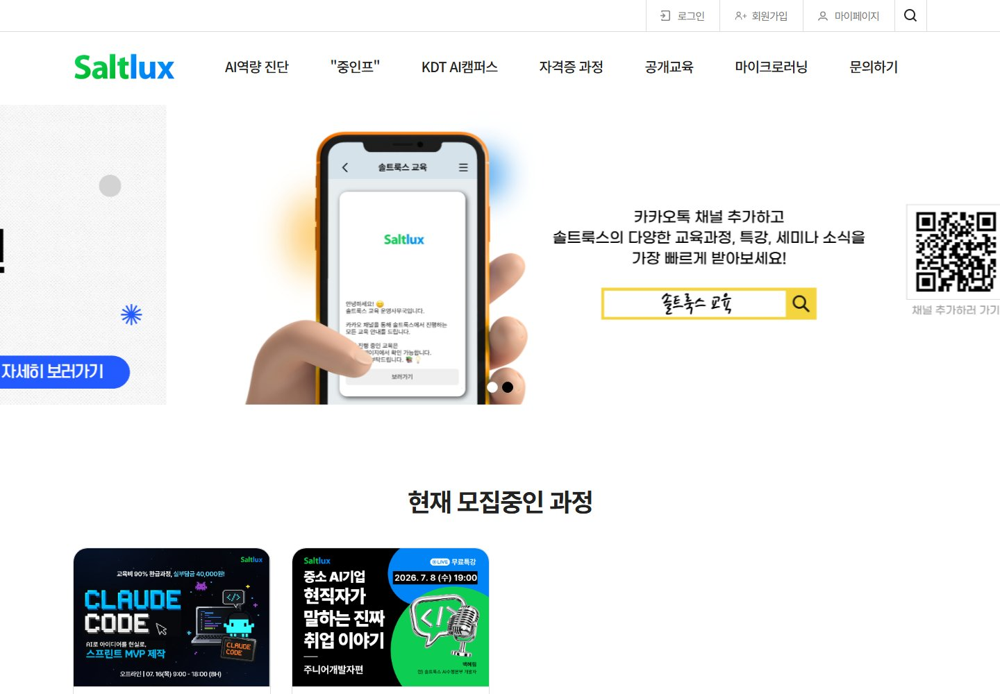
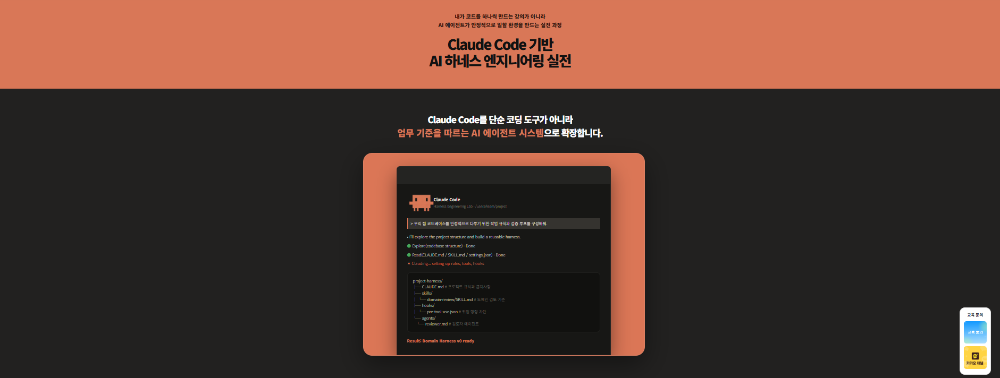
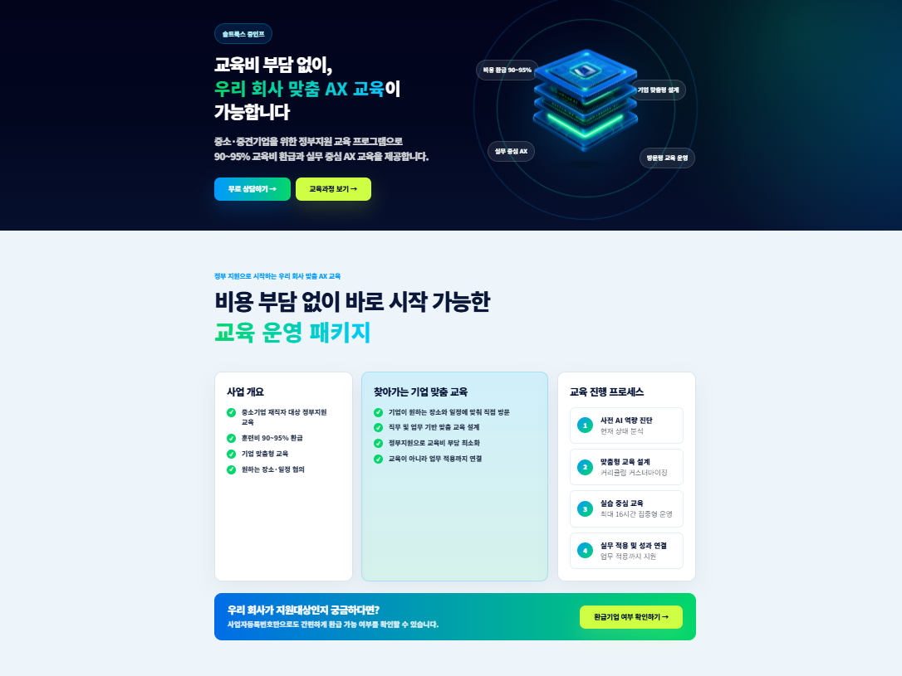
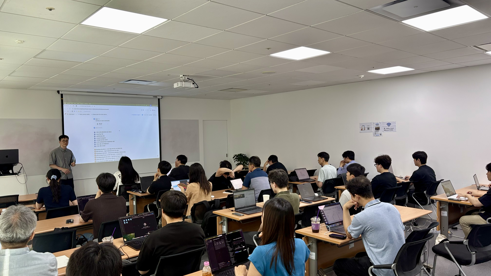
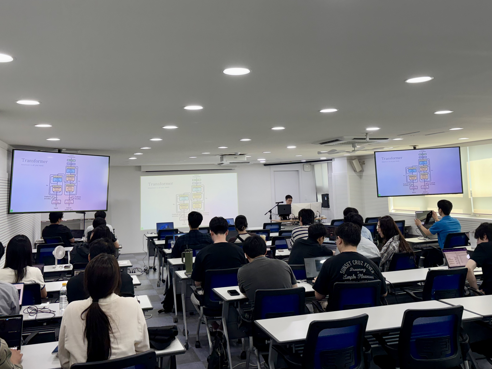
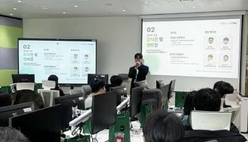
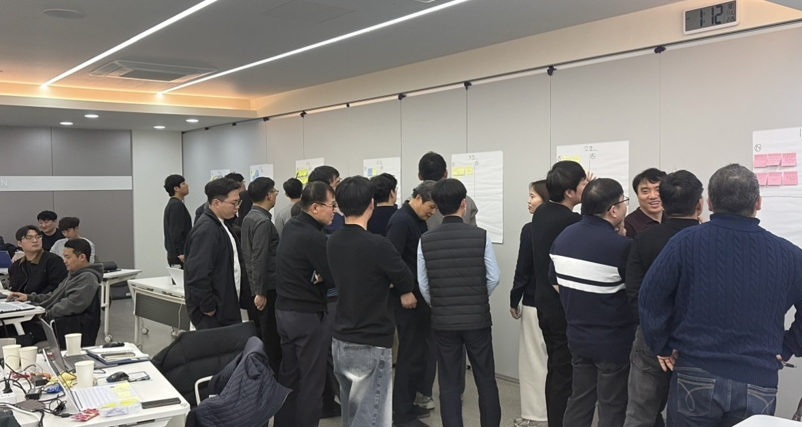
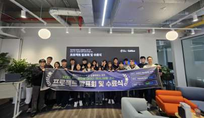
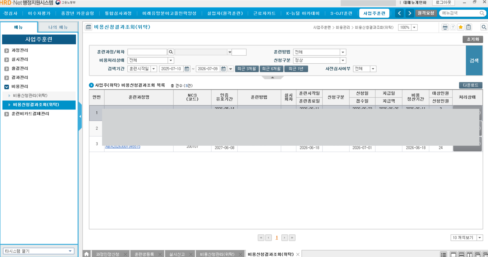
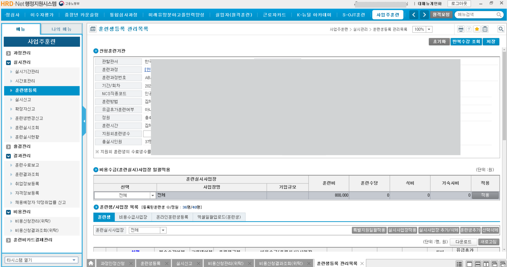
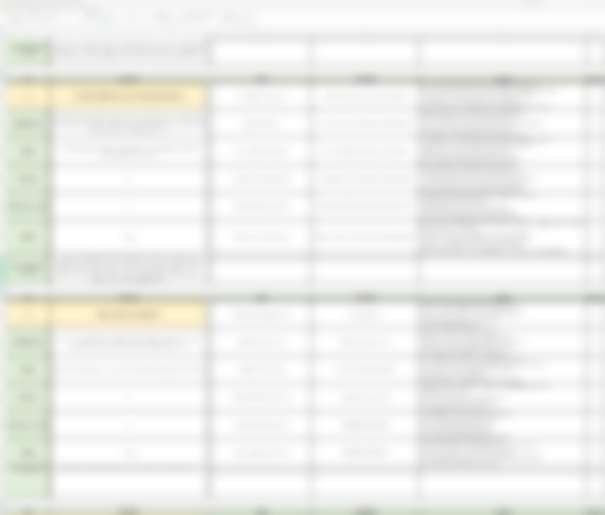